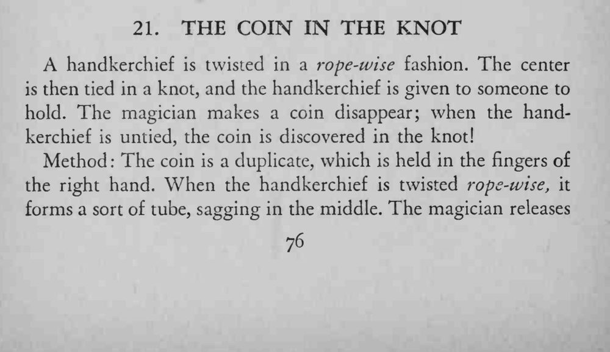
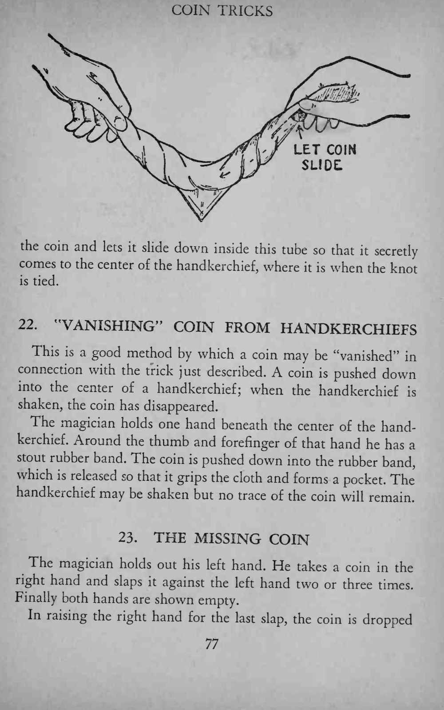
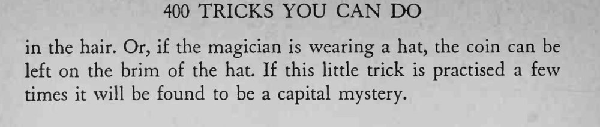

手帕搓成绳状、中央打结，交给观众拿着；魔术师让一枚硬币消失，解开手帕，硬币竟出现在结里。
复制币要同款同色；手帕的「管」要够松，硬币才能顺利滑到中央。



A handkerchief is twisted in a rope-wise fashion. The center is then tied in a knot, and the handkerchief is given to someone to hold. The magician makes a coin disappear; when the handkerchief is untied, the coin is discovered in the knot! Method The coin is a duplicate, which is held in the fingers of the right hand. When the handkerchief is twisted rope-wise, it forms a sort of tube, sagging in the middle. The magician releases f slide: the coin and lets it slide down inside this tube so that it secretly comes to the center of the handkerchief, where when the knot it is is tied. This is a good method by which a coin may be "vanished" in connection with the trick just described. A coin pushed down into the center of a handkerchief; when the handkerchief shaken, the coin has disappeared. The magician holds one hand beneath the center of the handkerchief. Around the thumb and forefinger of that hand he has a stout rubber band. The coin is pushed down into the rubber band, which is released so that it grips the cloth and forms a pocket. The handkerchief may be shaken but no trace of the coin will remain. The magician holds out his left hand. He takes a coin in the right hand and slaps it against the left hand two or three times. Finally both hands are shown empty. In raising the right hand for the last slap, the coin is dropped in the hair. Or, if the magician is wearing a hat, the coin can be left on the brim of the hat. If this little trick is practised a few times it will be found to be a capital mystery.